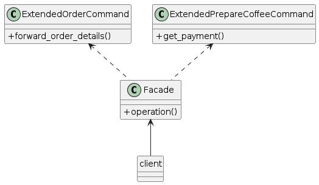

1.10. Facade
Facade is a structural design pattern that provides a simplified interface to a library, a framework, or any other complex set of classes.
:( Problem
Imagine that you must make your code work with a broad set of objects that belong to a sophisticated library or framework. Ordinarily, you’d need to initialize all of those objects, keep track of dependencies, execute methods in the correct order, and so on.
As a result, the business logic of your classes would become tightly coupled to the implementation details of 3rd-party classes, making it hard to comprehend and maintain.
:) Solution
A facade is a class that provides a simple interface to a complex subsystem which contains lots of moving parts. A facade might provide limited functionality in comparison to working with the subsystem directly. However, it includes only those features that clients really care about.
Having a facade is handy when you need to integrate your app with a sophisticated library that has dozens of features, but you just need a tiny bit of its functionality.
For instance, an app that uploads short funny videos with cats to social media could potentially use a professional video conversion library. However, all that it really needs is a class with the single method encode(filename, format). After creating such a class and connecting it with the video conversion library, you’ll have your first facade.
Real-World Analogy
When you call a shop to place a phone order, an operator is your facade to all services and departments of the shop. The operator provides you with a simple voice interface to the ordering system, payment gateways, and various delivery services.
Instead of making your code work with dozens of the framework classes directly, you create a facade class which encapsulates that functionality and hides it from the rest of the code. This structure also helps you to minimize the effort of upgrading to future versions of the framework or replacing it with another one. The only thing you’d need to change in your app would be the implementation of the facade’s methods.
Applicability
Use the Facade pattern when you need to have a limited but straightforward interface to a complex subsystem.
Often, subsystems get more complex over time. Even applying design patterns typically leads to creating more classes. A subsystem may become more flexible and easier to reuse in various contexts, but the amount of configuration and boilerplate code it demands from a client grows ever larger. The Facade attempts to fix this problem by providing a shortcut to the most-used features of the subsystem which fit most client requirements.
Use the Facade when you want to structure a subsystem into layers.
Create facades to define entry points to each level of a subsystem. You can reduce coupling between multiple subsystems by requiring them to communicate only through facades.
For example, let’s return to our video conversion framework. It can be broken down into two layers: video- and audio-related. For each layer, you can create a facade and then make the classes of each layer communicate with each other via those facades. This approach looks very similar to the Mediator pattern.
Pros
You can isolate your code from the complexity of a subsystem.
Cons
A facade can become a god object coupled to all classes of an app.
Relations with Other Patterns
Facade defines a new interface for existing objects, whereas Adapter tries to make the existing interface usable. Adapter usually wraps just one object, while Facade works with an entire subsystem of objects.
Abstract Factory can serve as an alternative to Facade when you only want to hide the way the subsystem objects are created from the client code.
Flyweight shows how to make lots of little objects, whereas Facade shows how to make a single object that represents an entire subsystem.
Facade and Mediator have similar jobs: they try to organize collaboration between lots of tightly coupled classes.
Facade defines a simplified interface to a subsystem of objects, but it doesn’t introduce any new functionality. The subsystem itself is unaware of the facade. Objects within the subsystem can communicate directly.
Mediator centralizes communication between components of the system. The components only know about the mediator object and don’t communicate directly.
A Facade class can often be transformed into a Singleton since a single facade object is sufficient in most cases.
Facade is similar to Proxy in that both buffer a complex entity and initialize it on its own. Unlike Facade, Proxy has the same interface as its service object, which makes them interchangeable.
How to Implement
Check whether it’s possible to provide a simpler interface than what an existing subsystem already provides. You’re on the right track if this interface makes the client code independent from many of the subsystem’s classes.
Declare and implement this interface in a new facade class. The facade should redirect the calls from the client code to appropriate objects of the subsystem. The facade should be responsible for initializing the subsystem and managing its further life cycle unless the client code already does this.
To get the full benefit from the pattern, make all the client code communicate with the subsystem only via the facade. Now the client code is protected from any changes in the subsystem code. For example, when a subsystem gets upgraded to a new version, you will only need to modify the code in the facade.
If the facade becomes too big, consider extracting part of its behavior to a new, refined facade class.
UML of the example implemented in this repository
